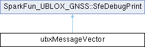

- Generated by
 1.18.0
1.18.0
|
SparkFun_u-blox_GNSS_v4
|

Public Member Functions | |
| ubxMessageVector (void) | |
| Construct the vector and populate it with one instance of every registered message. | |
| ~ubxMessageVector (void) | |
| Destroy the vector, deleting every message object it owns. | |
| ubxMessage * | find (uint8_t Class, uint8_t ID) |
| Find the registered message object for a given UBX Class/ID. | |
| ubxMessage * | findByName (const char *classStr, const char *idStr) |
| Find the registered message object by its human-readable class/id name. | |
| sfe_ublox_status_e | initStorage (uint8_t Class, uint8_t ID) |
| Lazily allocate a registered message's raw payload storage. | |
| sfe_ublox_status_e | isAutomatic (uint8_t Class, uint8_t ID, bool *automatic) |
| Get whether a registered message is set to be output periodically by the module. | |
| sfe_ublox_status_e | setAutomatic (uint8_t Class, uint8_t ID, bool automatic) |
| Set whether a registered message is set to be output periodically by the module. | |
| sfe_ublox_status_e | implicitUpdate (uint8_t Class, uint8_t ID, bool *implicitUpdateOut) |
| Get a registered message's implicit-update flag. | |
| sfe_ublox_status_e | setImplicitUpdate (uint8_t Class, uint8_t ID, bool implicitUpdateIn) |
| Set a registered message's implicit-update flag. | |
| sfe_ublox_status_e | moduleQueried (uint8_t Class, uint8_t ID, bool *queried) |
| Get whether fresh data has arrived for a registered message since it was last reported. | |
| sfe_ublox_status_e | setModuleQueried (uint8_t Class, uint8_t ID, bool queried) |
| Set whether fresh data has arrived for a registered message since it was last reported. | |
| sfe_ublox_status_e | getAddToFileBuffer (uint8_t Class, uint8_t ID, bool *adding) |
| Get whether a registered message is set to be added to the file buffer (logUBX()). | |
| sfe_ublox_status_e | setAddToFileBuffer (uint8_t Class, uint8_t ID, bool adding) |
| Set whether a registered message is added to the file buffer (used by logUBX()). | |
| sfe_ublox_status_e | getMsgOutKey (uint8_t Class, uint8_t ID, uint8_t commType, uint32_t *key) |
| Get a registered message's CFG-MSGOUT key for a given communication port. | |
| sfe_ublox_status_e | setCallback (uint8_t Class, uint8_t ID, void(*callbackPtr)(ubxCallbackDataCommon_t *)) |
| Register (or clear) the user callback function for a registered message. | |
| sfe_ublox_status_e | storePayload (uint8_t Class, uint8_t ID, const uint8_t *payload, uint16_t len, uint8_t checksumA, uint8_t checksumB) |
| Copy freshly-received payload bytes into a registered message's storage. | |
| sfe_ublox_status_e | extractValue (uint8_t Class, uint8_t ID, const char *field, ubxAnyType *value) |
| Look up one named field of a registered message's live payload. | |
| Public Member Functions inherited from SparkFun_UBLOX_GNSS::SfeDebugPrint | |
| void | debugPrint (const char *message, bool important=false) |
| Print a debug message (no trailing newline), if debugging is enabled. | |
| void | debugPrint (uint32_t value, bool important=false) |
| Print a debug value in decimal (no trailing newline), if debugging is enabled. | |
| void | debugPrint (uint32_t value, int printBase, bool important=false) |
| Print a debug value in a given base (no trailing newline), if debugging is enabled. | |
| void | debugPrintln (const char *message, bool important=false) |
| Print a debug message followed by a newline, if debugging is enabled. | |
| void | debugPrintln (uint32_t value, bool important=false) |
| Print a debug value in decimal followed by a newline, if debugging is enabled. | |
| void | debugPrintln (uint32_t value, int printBase, bool important=false) |
| Print a debug value in a given base followed by a newline, if debugging is enabled. | |
| void | debugPrintln (void) |
| Print a blank debug line, if debugging is enabled and not in limited-debug mode. | |
| void | copyDebugStateFrom (const SfeDebugPrint &other) |
| Copy debug state (output stream and enabled flags) from another SfeDebugPrint. | |
Public Attributes | |
| std::vector< ubxMessage * > | ubxMessageVectors |
Additional Inherited Members | |
| Protected Attributes inherited from SparkFun_UBLOX_GNSS::SfeDebugPrint | |
| SfePrint | _debugSerial |
| bool | _printDebug = false |
| bool | _printLimitedDebug = false |
|
inline |
Construct the vector and populate it with one instance of every registered message.
Asks ubxMessageRegistry to build one instance of every message class that self-registered via ubxRegisterMessage() in its own header - see the class-level comment above and AGENTS.md "Message Class self-registration".
|
inline |
Look up one named field of a registered message's live payload.
| Class | The UBX message class to look up. |
| ID | The UBX message ID (within Class) to look up. |
| field | Name of the field to extract. |
| value | Out parameter: filled in with the field's tagged value if found. |
|
inline |
Find the registered message object for a given UBX Class/ID.
| Class | The UBX message class to look up. |
| ID | The UBX message ID (within Class) to look up. |
|
inline |
Find the registered message object by its human-readable class/id name.
| classStr | Class mnemonic to match (e.g. "NAV"). |
| idStr | Message mnemonic to match (e.g. "HPPOSLLH"). |
|
inline |
Get whether a registered message is set to be added to the file buffer (logUBX()).
| Class | The UBX message class to look up. |
| ID | The UBX message ID (within Class) to look up. |
| adding | Out parameter: filled in with the message's addToFileBuffer flag. |
|
inline |
Get a registered message's CFG-MSGOUT key for a given communication port.
| Class | The UBX message class to look up. |
| ID | The UBX message ID (within Class) to look up. |
| commType | Which port's key to return (I2C, SPI, UART1, UART2). |
| key | Out parameter: filled in with the UBLOX_CFG_MSGOUT_* key. |
|
inline |
Get a registered message's implicit-update flag.
true means the generic getUBX()-style call itself parses newly-arrived data for this message; false means the caller must call checkUblox() itself first.
| Class | The UBX message class to look up. |
| ID | The UBX message ID (within Class) to look up. |
| implicitUpdateOut | Out parameter: filled in with the message's implicit-update flag. |
|
inline |
Lazily allocate a registered message's raw payload storage.
| Class | The UBX message class to look up. |
| ID | The UBX message ID (within Class) to look up. |
|
inline |
Get whether a registered message is set to be output periodically by the module.
| Class | The UBX message class to look up. |
| ID | The UBX message ID (within Class) to look up. |
| automatic | Out parameter: filled in with the message's automatic-output flag. |
|
inline |
Get whether fresh data has arrived for a registered message since it was last reported.
| Class | The UBX message class to look up. |
| ID | The UBX message ID (within Class) to look up. |
| queried | Out parameter: filled in with the message's moduleQueried flag. |
|
inline |
Set whether a registered message is added to the file buffer (used by logUBX()).
| Class | The UBX message class to look up. |
| ID | The UBX message ID (within Class) to look up. |
| adding | The new addToFileBuffer flag value. |
|
inline |
Set whether a registered message is set to be output periodically by the module.
| Class | The UBX message class to look up. |
| ID | The UBX message ID (within Class) to look up. |
| automatic | The new automatic-output flag value. |
|
inline |
Register (or clear) the user callback function for a registered message.
| Class | The UBX message class to look up. |
| ID | The UBX message ID (within Class) to look up. |
| callbackPtr | Function to call once fresh data is waiting for this message, or nullptr to clear any previously-registered callback. |
|
inline |
Set a registered message's implicit-update flag.
| Class | The UBX message class to look up. |
| ID | The UBX message ID (within Class) to look up. |
| implicitUpdateIn | The new implicit-update flag value. |
|
inline |
Set whether fresh data has arrived for a registered message since it was last reported.
| Class | The UBX message class to look up. |
| ID | The UBX message ID (within Class) to look up. |
| queried | The new moduleQueried flag value. |
|
inline |
Copy freshly-received payload bytes into a registered message's storage.
Copies into the message's live _storage (marking it fresh via _moduleQueried), and, if a callback is registered, also freezes a copy into the message's separate ring-buffered _callbackStorage - see the longer design note above this function's definition for how the ring buffer is filled and what happens when it is full.
| Class | The UBX message class to look up. |
| ID | The UBX message ID (within Class) to look up. |
| payload | Pointer to the newly-received payload bytes. |
| len | Number of payload bytes received (clamped to the message's _messageLength before being copied/stored). |
| checksumA | First UBX checksum byte (CK_A) of the received frame, needed to synthesize a complete raw frame for the callback path. |
| checksumB | Second UBX checksum byte (CK_B) of the received frame. |